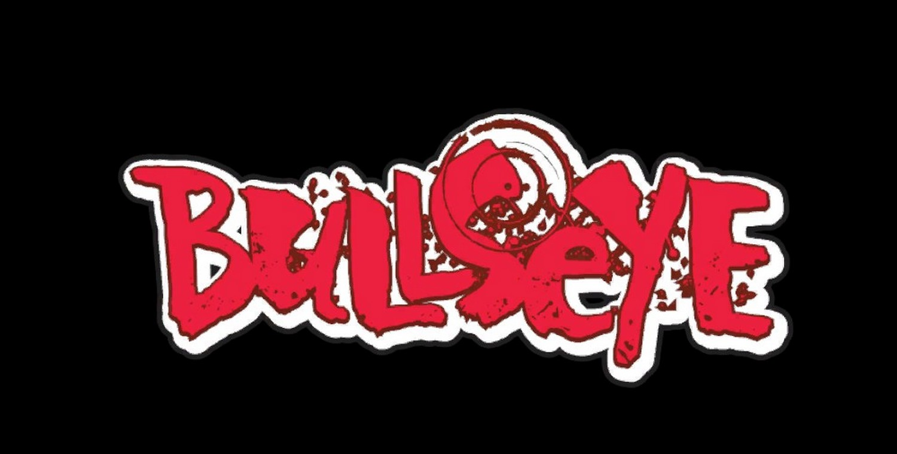
Bullseye (Lester) (Terre-616)
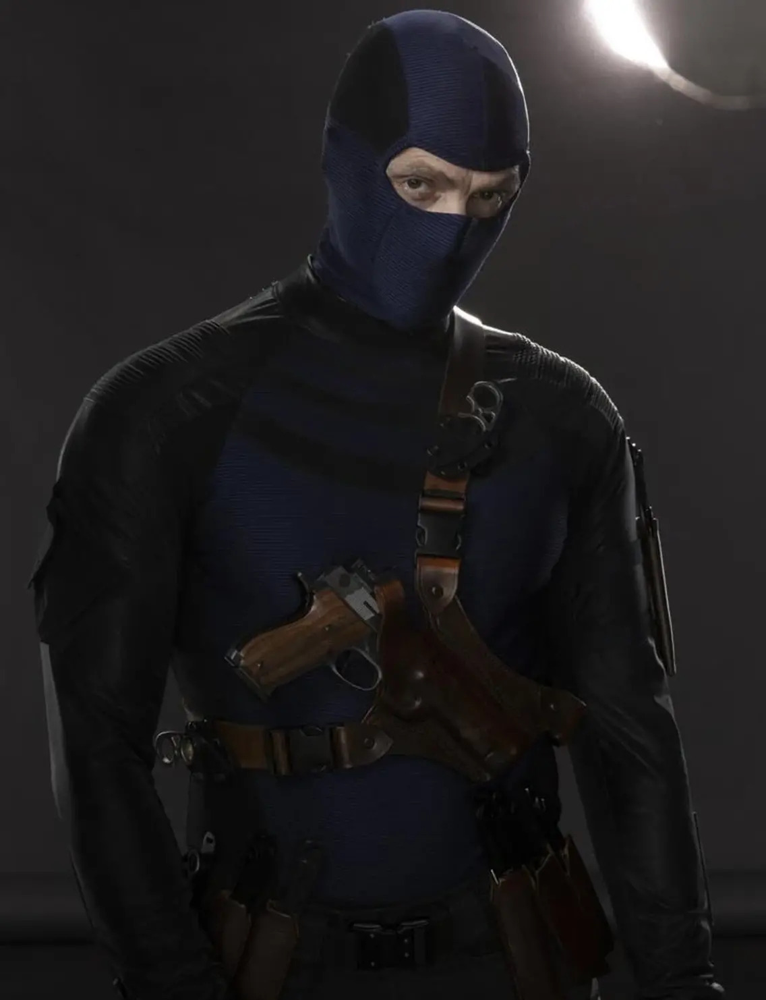
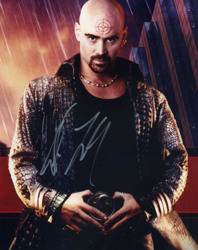

Origines :
Bullseye est un assassin mystérieux, aux origines tout autant mystérieuses, doté de talents de lanceur surnaturels.
On ne connaît pas son véritable prénom.
Lors de sa première arrestation et de son interrogatoire en prison, il a révélé des détails sur sa jeunesse, pour ensuite se vanter d'avoir menti.
L'un de ces détails que son frère avait mis le feu à leur maison pour tenter de tuer leur père, chose que Bullseye affirmera plus tard avoir fait lui-même.
Il a également mis le feu à la prison dans laquelle son père était enfermé, l'abandonnant à la mort une fois de plus.
Dans un autre récit, il aurait dessiné une cible sur le front de son père ivre, et lui aurait ensuite tiré dessus.
Avant de devenir mercenaire, certains éléments indiquent que Bullseye aurait tenté d'exploiter ses capacités exceptionnelles pour devenir joueur de base-ball professionnel.
Selon ses propres dires, après seulement trois matches, il s'ennuyait tellement qu'il aurait délibérément lancé la balle dans le front du batteur, le tuant sur le coup.
Il est finalement devenu un agent d'élite au sein de l'Agence de sécurité nationale des États-Unis.
Peu après, il devient assassin indépendant, une carrière idéale pour quelqu'un qui prenait tant de plaisir à tuer.
Il se créa son propre mode opératoire, l'utilisation d'armes de jet.
Il a d'abord acquis une certaine notoriété grâce à une série de tentatives d'extorsion et de meurtres à New-York, rendant publiques ses manigances en acceptant une interview pour le Daily Bugle.
Il a ensuite combattu et vaincu Daredevil, bien que le héros l'ait rapidement retrouvé et contrecarré ses plans.
Bullseye fut engagé pour assassiner l'avocat Matt Murdock, l'identité secrète de Daredevil, mais fut vaincu par ce dernier.
Après cette défaite, il croyait sa formidable réputation ruinée et jura vengeance.
A chaque fois qu'il en eut l'occasion, il affronta Daredevil, n'hésitant pas à prendre des otages, comme un studio de télévision, en kidnappant la Veuve Noire, etc.
Mais à chaque fois, il fut vaincu par le Diable de Hell's Kitchen.
Il fut déclaré fou, développant une tumeur au cerveau et commença à halluciner, persuadé que des inconnus étaient Daredevil et a tenté de tous les tuer.
Une fois encore, le vrai Daredevil le vaincu et sa tumeur lui fut retirée.
Plus tard, il reçut une offre de la part du Caïd, et commença à travailler pour lui.
Cependant, après son retour d'un autre emprisonnement par Daredevil, Bullseye fut furieux d'apprendre que le Caïd avait choisi Elektra pour le remplacer.
Bullseye la tua, avec rien de plus qu'une carte à jouer et son propre saï, gagnant l'inimité de Daredevil, l'amant d'Elektra.
Bullseye combattit le héros enragé sur les toits de New-York, jusqu'au point culminant de leur affrontement.
Daredevil laissa tomber Bullseye du haut d'un toit, le laissant apparemment pour mort.
Mais Bulseye survécut, malgré sa colonne vertébrale brisée.
Durant son séjour à l'hôpital, Daredevil se faufilera dans sa chambre armé d'un revolver de calibre .38 déchargé, et commença à jouer à une fausse partie de roulette russe avec lui, pour le tourmenter.

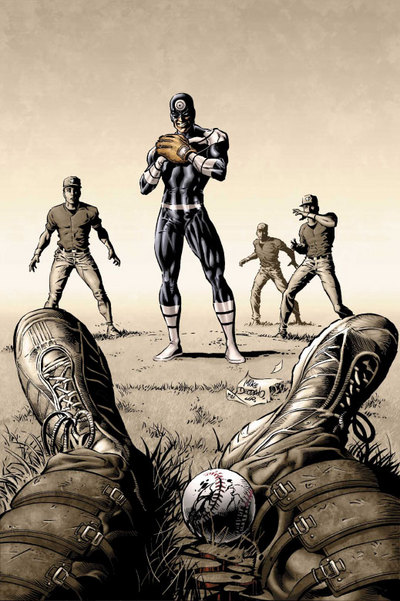
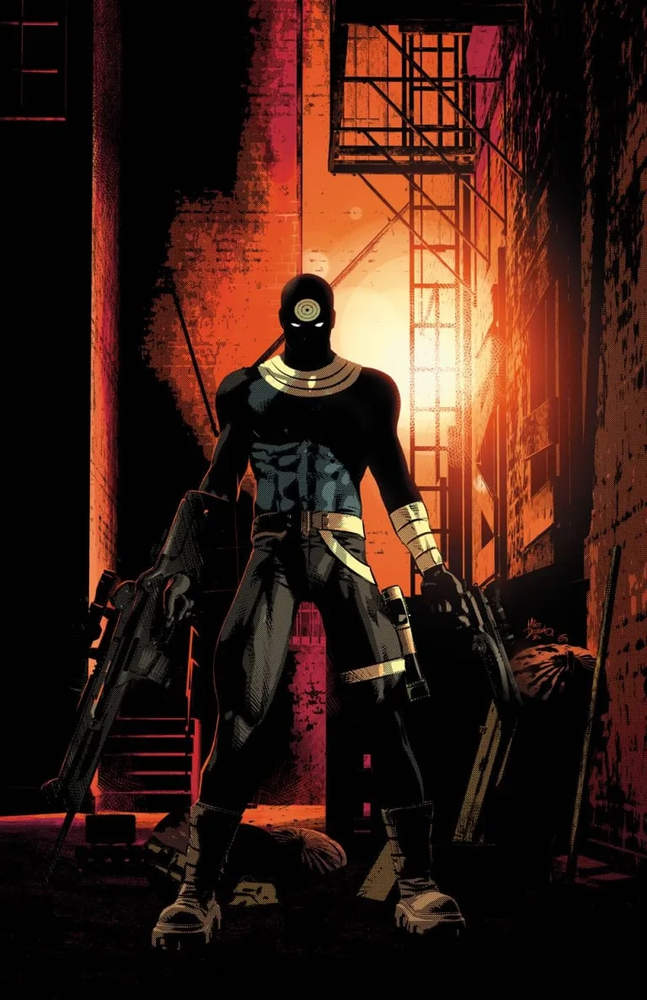

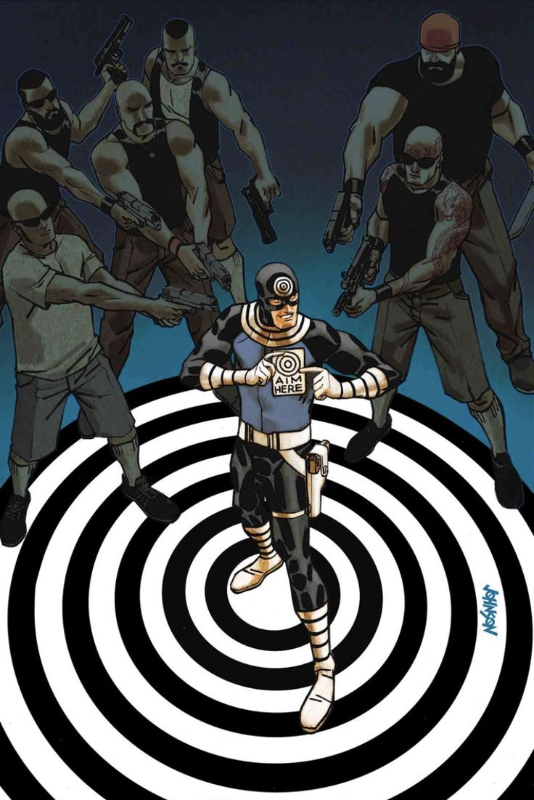
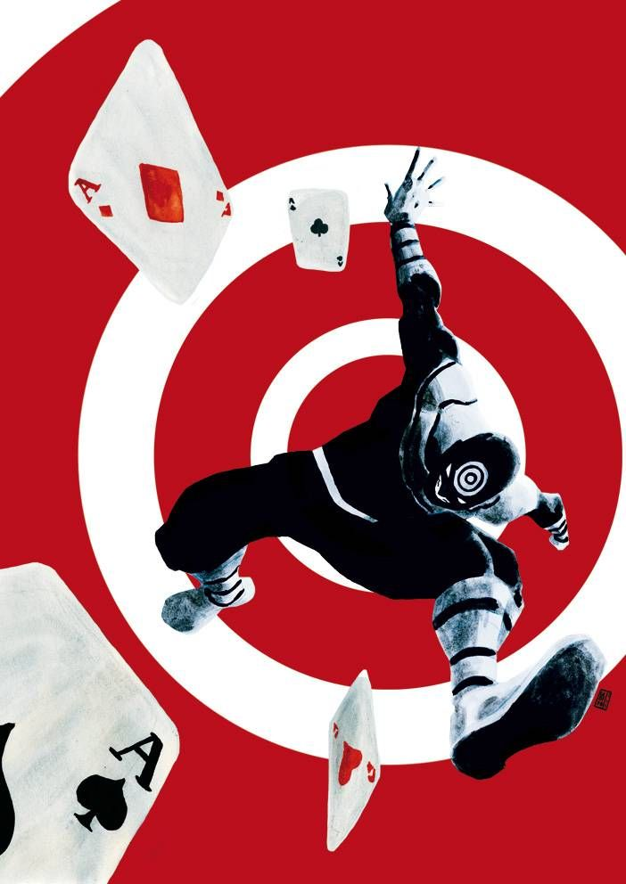
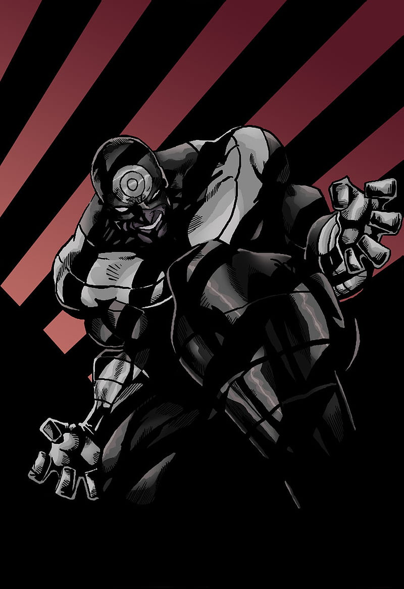
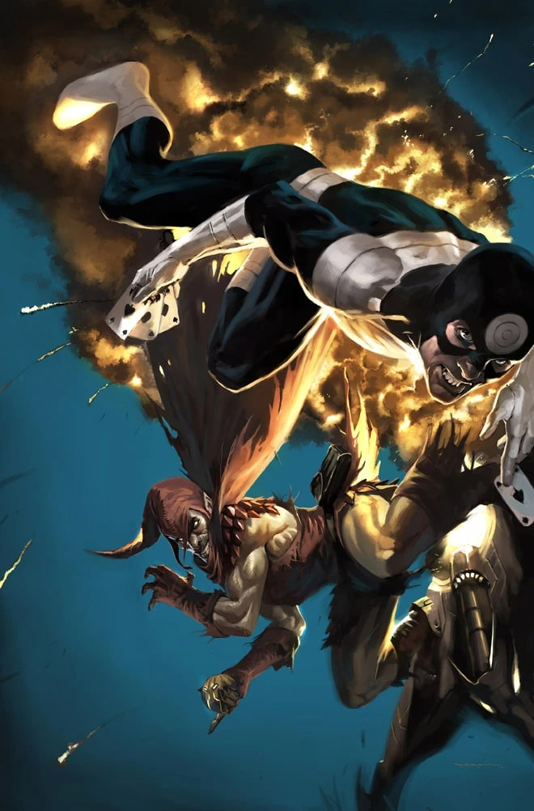
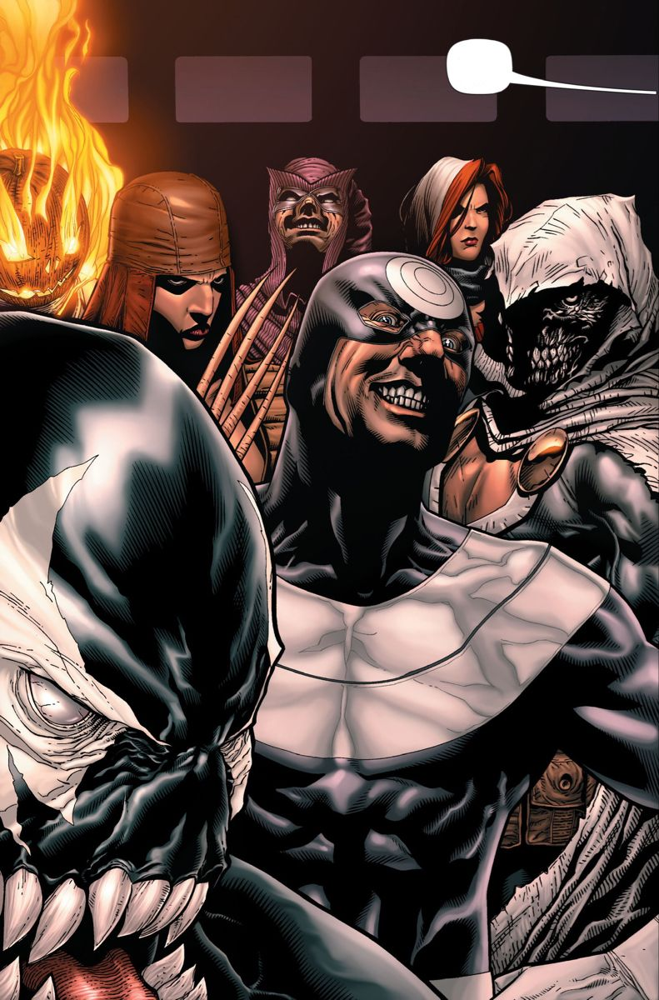

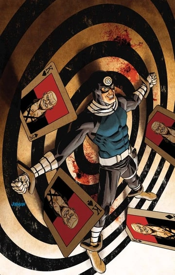

Capacités :
Bullseye ne possède pas de super-pouvoir à proprement parler, mais sa capacité presque surhumaine à utiliser n'importe quel objet du quotidien pour tuer pourrait-être perçue comme telle.
Il se sert par exemple de cartes à jouer comme des couteaux de lancer.
Il a même craché une de ses propres dents à travers un crâne humain, tué quelqu'un en lançant un avion en papier d'un immeuble à un autre, et il a tué une femme avec un cure-dent projeté à travers une fenêtre sur une centaine de mètres.
Ce talent, mêlé à son don de précision, en fait un assassin redoutable.
Il possède également une agilité, des réflexes, une endurance et une rapidité comparables à celles d'un athlète olympique.
A la suite d'un violent combat avec Daredevil le laissant paraplégique, il a été opéré et sa colonne vertébrale est désormais recouverte d'adamantium, ce qui la protège de toute sorte de blessure.

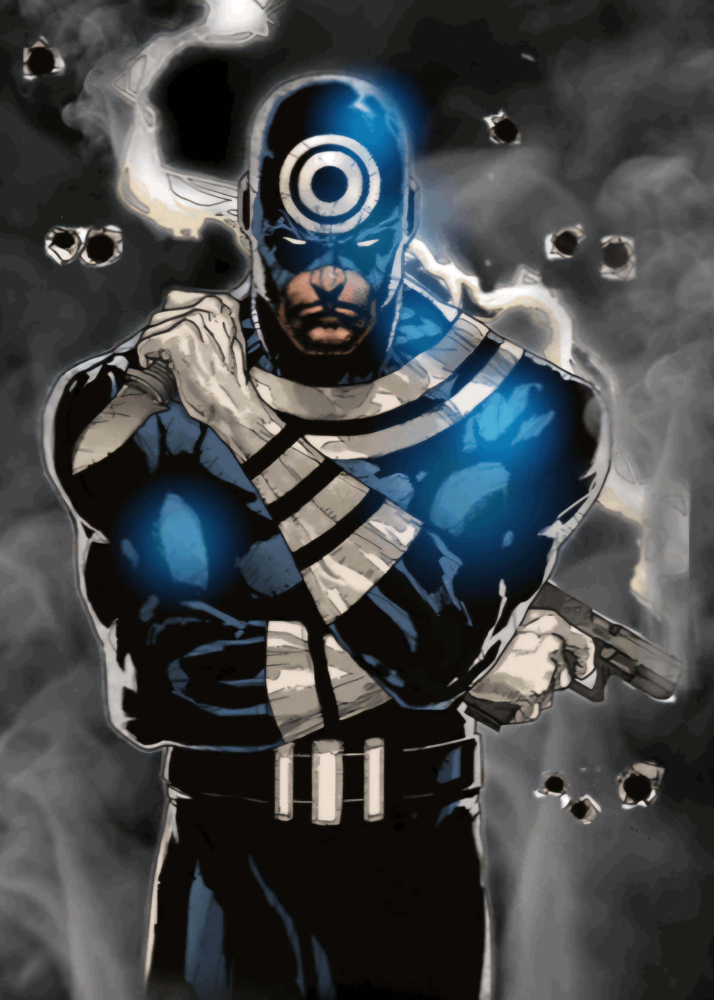
Apparence :
Traditionnellement, Bullseye porte une combinaison bleu-nuit ou noir, avec des accents blancs.
Il porte une cagoule, ne laissant que le bas de son visage apparent, avec une cible dessinée sur le front, en cercles concentriques blancs.
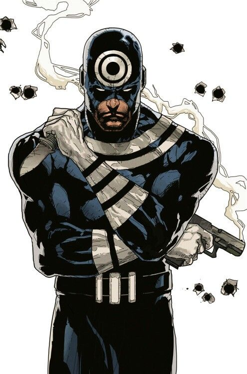
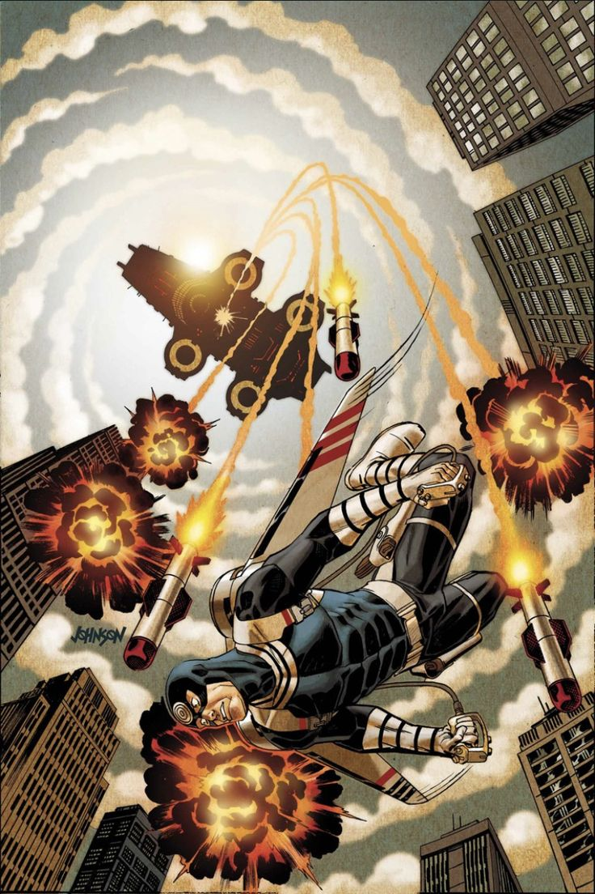
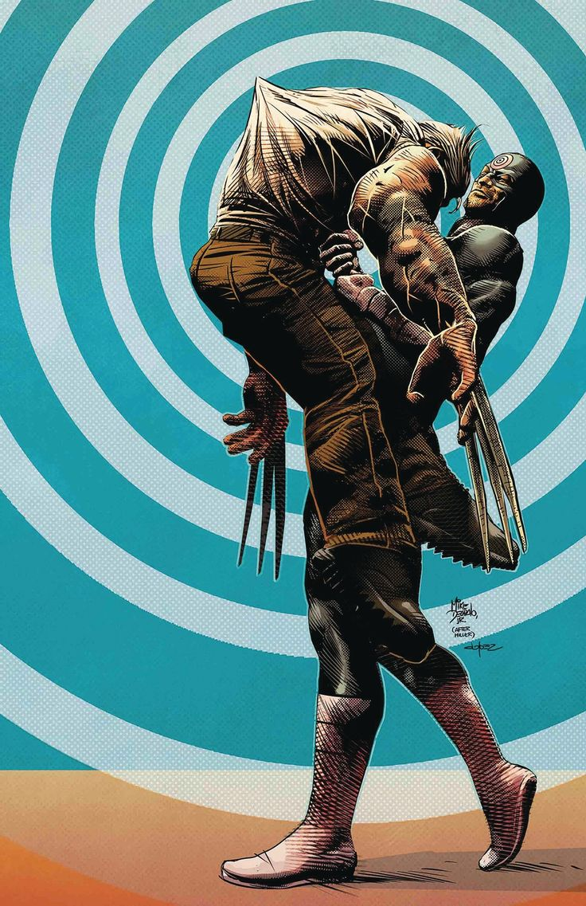
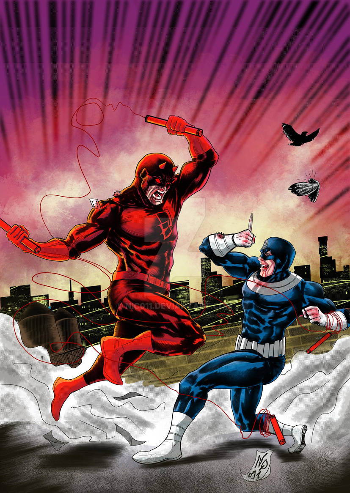
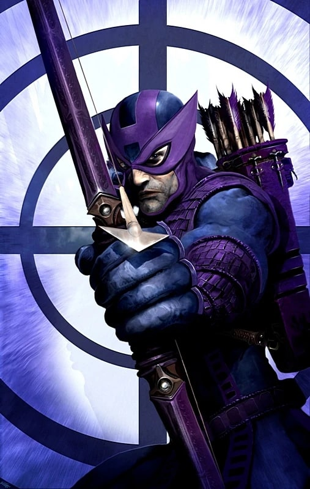
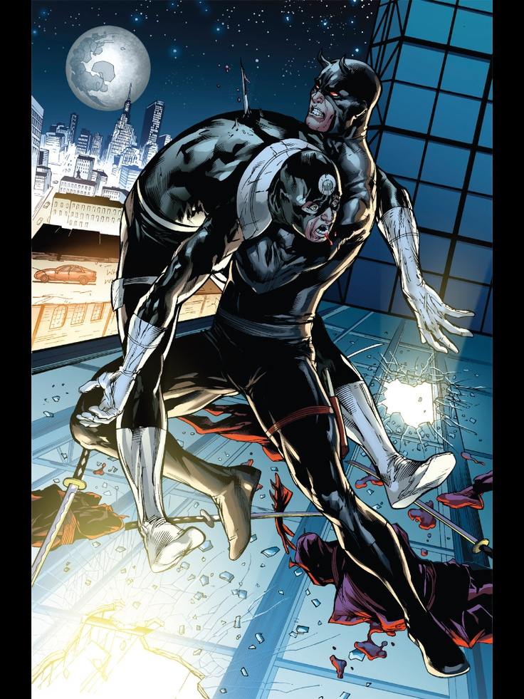
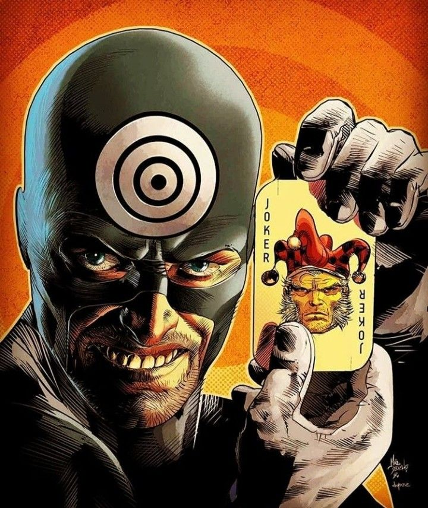
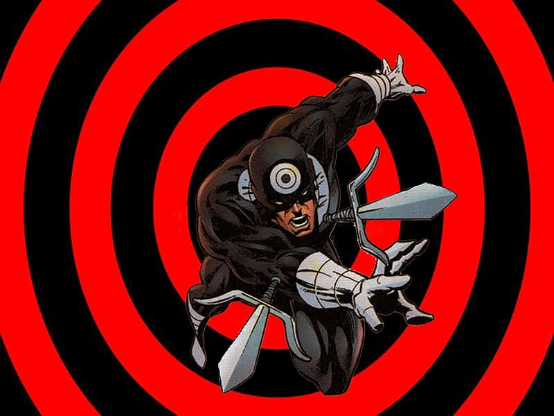